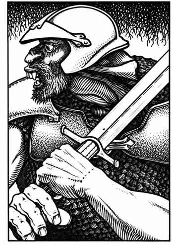

火巨人 · Fire Giant
 |
|
火巨人住在城堡或洞穴中的概率相近。在巢穴中有 25% 概率以 1–4 只最大体型的地狱犬看守。若巢穴中遇到 4 只以上火巨人，额外出现者为巨人女性（生命骰与伤害按霜巨人计算）；但若总数达到 7 或 8，最后一至两只是幼年巨人（掷百分骰确定体型）。
成年火巨人能将石块掷至 1–20 寸远，命中造成 2–20 点伤害；它们有 50% 概率接住同类投来的石块。火巨人不受火焰伤害，包括红龙的吐息。
外观。 火巨人肩宽约 6 尺，看起来几乎像矮人。它们皮肤煤黑，头发火红或亮橙，眼睛深红，牙齿通常黄橙色；身穿盔甲或龙皮，偏爱巨剑。